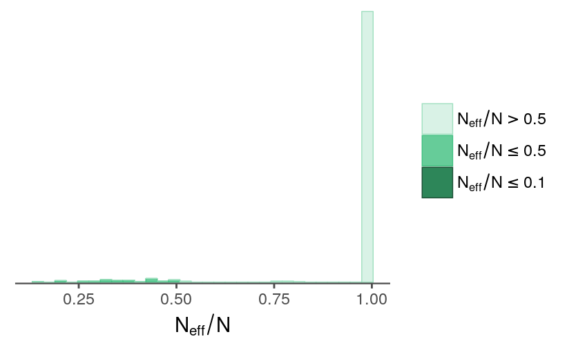

I’ve now extended the previous single-season, single ability model to estimate abilities at different splits in the season. The new model largely follows Milad Kharratzadeh’s English Premier League model, with “weeks” corresponding to “periods”. The most substantial difference between the EPL model and the one here is that a team’s ability is not represented as a random walk where the ability from the previous period serves as the mean for the next period’s ability. Instead, a team’s ability values for all periods are modeled as normally distributed around a common mean.
I’ve run the model with the 2011 game logs. I split the season into eight periods (~20 games), thinking that it would do an OK job of capturing the ups and downs a team goes through in a season while not introducing an unwieldy number of parameters. I haven’t played around with any other splits yet.
fit <- readRDS("../outputs/models/rundiff-split_2011-fit.rds")Clicking around in ShinyStan UI (launch_shinystan(fit)), the diagnostic statistics look fine overall. Some parameters have effective sample sizes on the lower end.
model_pars <- names(fit)
selpars <- model_pars[!grepl("^eta", model_pars) &
!grepl("rundiff_new", model_pars)]
nrats <- neff_ratio(fit, pars = selpars)
nrats[nrats < 0.5]
#> sigma_theta tau sigma_a_std[28] a[2,17]
#> 0.4868836 0.1566860 0.4995247 0.4499548
#> a[4,17] a[4,28] sigma_a[1] sigma_a[2]
#> 0.4974116 0.4475099 0.4427078 0.2808049
#> sigma_a[3] sigma_a[4] sigma_a[5] sigma_a[6]
#> 0.3699918 0.4239120 0.3227081 0.3887525
#> sigma_a[7] sigma_a[8] sigma_a[9] sigma_a[10]
#> 0.3268086 0.2978791 0.3190327 0.3488612
#> sigma_a[11] sigma_a[12] sigma_a[13] sigma_a[14]
#> 0.4663558 0.3572937 0.3760510 0.4014975
#> sigma_a[15] sigma_a[16] sigma_a[17] sigma_a[18]
#> 0.2618281 0.2608182 0.2092528 0.4498960
#> sigma_a[19] sigma_a[21] sigma_a[22] sigma_a[23]
#> 0.4581744 0.4311620 0.3493293 0.4822168
#> sigma_a[24] sigma_a[26] sigma_a[27] sigma_a[28]
#> 0.3304278 0.3737520 0.3571748 0.1975229
#> sigma_a[29] sigma_a[30] lp__
#> 0.4310972 0.3323508 0.1956643
mcmc_neff_hist(nrats) + theme_remove_axis("y")
Following the EPL model, I’ve included a parameter for the degrees of freedom used for the t-distribution. Most of the estimated values are larger than 7, which is the fixed value I used for in the previous model.
samps <- rstan::extract(fit)quantile(samps$nu, probs = c(0.025, 0.5, 0.975))
#> 2.5% 50% 97.5%
#> 7.609503 10.963311 18.136507
data.frame(nu = samps$nu) %>%
ggplot(aes(nu)) +
geom_histogram(bins = 40) +
labs(x = expression(nu)) +
theme_remove_axis("y")With a median \(\nu\) near 11, it probably makes sense to stick with a t-distribution rather than switching to a normal.
set.seed(113724)
nvals <- tibble(x = seq(-6, 6, length.out = 500),
y = dnorm(x))
tvals <- expand.grid(x = nvals$x, df = c(3, 7, 11, 17)) %>%
mutate(y = dt(x, df = df),
df = factor(df))
ggplot(tvals) +
geom_line(aes(x = x, y = y, color = df)) +
geom_line(data = mutate(nvals, distr = "normal"),
aes(x = x, y = y, linetype = distr)) +
labs(color = expression(nu)) +
guides(color = guide_legend(order = 0),
linetype = guide_legend(order = 1, title = NULL)) +
theme_void() +
theme(legend.position = c(0.2, 0.5)) +
scale_linetype_manual(values = c("dashed")) +
scale_color_manual(values = c(tc$primary, tc$secondary,
tc$primary_light, tc$secondary_light))Both \(\nu\) and \(\sigma_y\) influence the range of observed score differentials, and, unsurprisingly, iterations with larger values for \(\nu\) tend to have larger values for \(\sigma_y\).
data.frame(nu = samps$nu,
sigma_y = samps$sigma_y) %>%
ggplot(aes(nu, sigma_y)) +
labs(x = expression(nu),
y = expression(sigma[y])) +
geom_point(alpha = 0.2, shape = 16)The model includes a term for home-field avantage. The estimates are uncertain, small in magnitude, and slightly shifted in the direction of the home team. No suprises there.
quantile(samps$b_home, probs = c(0.025, 0.5, 0.975))
#> 2.5% 50% 97.5%
#> -0.1235046 0.0405651 0.2009177
data.frame(b_home = samps$b_home) %>%
ggplot(aes(b_home)) +
geom_vline(xintercept = 0, size = 0.8, color = tc$primary_lighter) +
geom_histogram(bins = 40, size = 0.3) +
expand_limits(x = c(-0.3, 0.3)) +
labs(x = expression(beta[home])) +
theme_remove_axis("y")Perhaps this parameter should be estimated for each team in order to catch park-specific effects. That’s a bit complicated because a hitter’s park can help both teams score more runs, but I suppose it could capture the extent that the home team plays to (or fails to play to) their park’s strengths.
The main difference between this model and its predecessor is that a single-season ability estimate for a team is split into eight periods. First, let’s see if the general pattern for the abilities looks right. A team’s abilities across periods share a common mean, so two ability parameters for the same team should be correlated across iterations, while parameters for different teams shouldn’t show the same coupling. Below are the pairs plots for the seventh and eighth periods for the 29th team and the first and second periods for the 30th team.
samps_flat <- as.array(fit)
prev_theme <- theme_update(panel.grid = element_blank(),
axis.text.y = element_blank(),
axis.text.x = element_blank())
color_scheme_set("gray")
mcmc_pairs(samps_flat,
pars = c("a[7,29]", "a[8,29]", "a[1,30]", "a[2,30]"),
off_diag_fun = "hex")
theme_set(prev_theme)And here are the ability estimates for each team and period.
source("../code/lib/utils.R")
info <- read_rdump("../outputs/models/rundiff-split_2011.info.R")avals <- trace_intervals(samps$a, c("period", "team_idx")) %>%
mutate(team = info$team_names[team_idx])
teams_ranked <- arrange(info$wins_2011, desc(n_wins))$team
mutate(avals, team = factor(team, levels = teams_ranked)) %>%
ggplot(aes(x = period, y = mean)) +
geom_hline(yintercept = 0, color = tc$primary_lighter) +
geom_linerange(aes(ymin = p10, ymax = p90), size = 0.3) +
geom_point() +
facet_wrap(~ team) +
labs(y = "mean ability (with 80% intervals)",
title = "Team ability estimates for 2011 season",
subtitle = "sorted by regular season standings")It seems like the periods are capturing some variation, though many teams might be sufficiently summarized by a single period ability estimate.
There are some interesting teams, such as the Brewers, that look out of place based on their season standings. I’m not sure what’s going on here. Assuming it’s not a coding error, I suppose it should come down to some combination of the observed match-ups (e.g., weaker division) and iter-team variation in run differentials (e.g., winning a disproportionate number of close games).
dat <- read_rdump("../outputs/models/rundiff-split_2011.data.R")matchups <- tribble(~home, ~away,
"ARI", "COL",
"ATL", "WAS",
"CIN", "HOU",
"CLE", "MIN",
"LAN", "SFN",
"NYA", "BOS",
"PHI", "NYN",
"TEX", "SEA") %>%
mutate(home_idx = match(home, info$team_names),
away_idx = match(away, info$team_names))
observed_idx <- which(paste0(info$team_names[dat$team_home],
info$team_names[dat$team_away])
%in%
paste0(matchups$home, matchups$away))
observed <- tibble(rundiff = dat$rundiff[observed_idx],
home_idx = dat$team_home[observed_idx],
home_name = info$team_names[home_idx],
away_idx = dat$team_away[observed_idx],
away_name = info$team_names[away_idx],
home_period = factor(dat$period_home[observed_idx],
levels = 1:8),
matchup = factor(paste0(away_name, "@", home_name)))
ppc <- trace_intervals(samps$rundiff_new[,observed_idx], "game") %>%
mutate(home_name = observed$home_name,
away_name = observed$away_name,
home_period = factor(observed$home_period,
levels = 1:8),
matchup = factor(paste0(away_name, "@", home_name))) %>%
as_tibble() %>%
group_by(matchup, home_period) %>%
filter(row_number() == 1)ggplot(ppc, aes(x = home_period)) +
geom_hline(yintercept = 0, color = tc$primary_lighter) +
geom_linerange(aes(ymin = p2.5, ymax = p97.5),
alpha = 0.8) +
geom_point(aes(y = rundiff),
fill = NA, color = tc$background_dark, shape = 21,
data = observed) +
scale_y_continuous(limits = c(-11, 11),
minor_breaks = -11:11) +
labs(x = NULL, y = NULL,
title = "Run differential",
subtitle = "compared to the match-up's 95% predictive interval") +
coord_flip() +
facet_wrap(~ matchup, ncol = 1, scales = "free_y",
strip.position = "left") +
theme_remove_axis("y") +
theme(strip.text.y = element_text(angle = 180))The intervals are still unimpressively large. My next attempt to shrink them will be to incorporate information about the starting pitcher for each team.